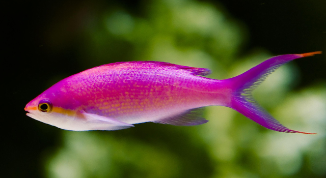

SEA WORLD
-
Regal Tang
×The Regal Tang is best known for its beautiful blue and black colorway complemented by a yellow tail. This fish can grow up to 12 inches long, and it features small scales as well as a pointy nose. Young regal tangs feed mostly on plankton, while older specimens are omnivorous so they sometimes nibble on algae. Since this fish emits a strong odor, it is often used as bait. However, due to its spectacular beauty, the Regal Tang is also found in aquariums.
- 
-